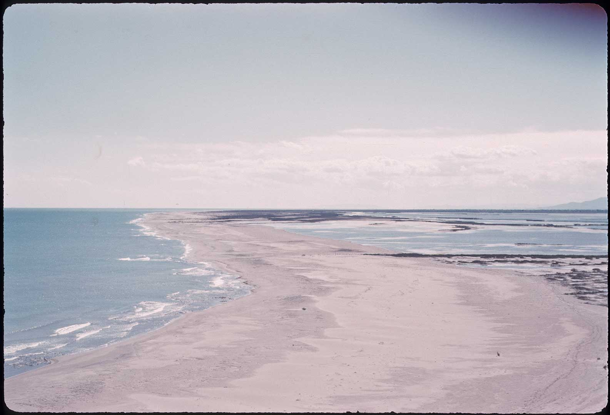

Foto: Salvador Maluquer (dècada de 1950 i 1960).
Arxiu Parc Natural del Delta de l’Ebre
L'illa de Buda
Metonímia del Delta de l’Ebre
Actualment, Buda forma part de les diverses “figures” de protecció del medi natural: espai PEIN “Delta de l’Ebre”, Parc Natural i Xarxa Natura 2000